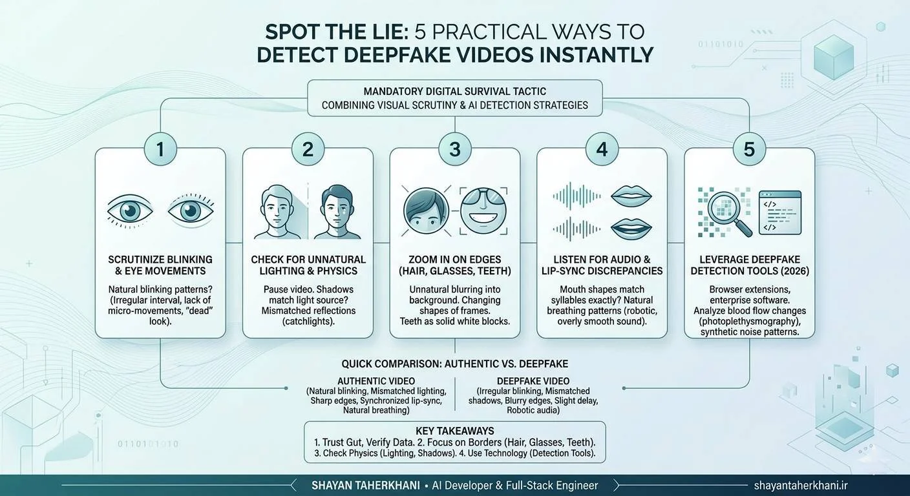

Spot the Lie: 5 Practical Ways to Detect Deepfake Videos Instantly
Generative AI has evolved from producing pixelated, glitchy clips to creating hyper-realistic synthetic media that can fool even the sharpest eyes. Whether you are scrolling through social media, verifying a news clip, or evaluating a corporate video message, knowing how to detect deepfake videos is no longer just a skill for cybersecurity experts—it is a mandatory digital survival tactic.

In this guide, we break down the most reliable, human-first techniques to spot manipulated media. By combining visual scrutiny with the latest AI generated video detection strategies, you can confidently separate fact from fiction.
Table of Contents
Why Learning to Detect Deepfake Videos is Critical in 2026
The rapid acceleration of artificial intelligence means that anyone with a smartphone can now generate synthetic media. While this technology has incredible creative applications, malicious actors use it for misinformation, financial fraud, and identity theft. The Cybersecurity and Infrastructure Security Agency (CISA) has repeatedly warned about the increasing threat of synthetic media in corporate phishing and public disinformation campaigns.
If you're already using Free AI Tools, you know firsthand how fast AI moves. The same machine learning principles that speed up your workflow are actively being used to clone voices and faces. To protect your digital identity, you must understand how to detect deepfakes before they cause harm.
5 Practical Ways to Spot Deepfakes Instantly
Even the most advanced generative models leave behind digital fingerprints. Here are five practical ways to spot them.
Method 1: Scrutinize Blinking Patterns and Eye Movements
One of the hardest things for an AI to replicate perfectly is the natural human eye. Early deepfakes notoriously lacked blinking entirely. While modern models have improved, they often blink at irregular intervals or lack subtle micro-movements.
- What to look for: Does the person blink too fast, too slow, or not at all? Do their eyes look "dead" or fail to track the subject they are supposedly looking at? According to research from the MIT Media Lab, analyzing subtle physiological signals like eye movement remains one of the most accurate ways to spot synthetic faces.
Method 2: Check for Unnatural Lighting and Physics
AI models generate images by predicting pixel patterns, not by simulating real-world physics. Because of this, they often struggle with consistent lighting.
- What to look for: Pause the video. Does the shadow on the person's face match the light source in the room? Look at the reflections in their eyes (catchlights). In an authentic video, the reflection will perfectly mirror the light source. In a deepfake, the reflections often look mismatched or physically impossible.
Method 3: Zoom In on Edges (Hair, Glasses, and Teeth)
Rendering complex, overlapping textures is a computational nightmare for AI. The borders where a synthetic face meets the real background—or where accessories sit on the face—are prime locations for rendering artifacts.
- What to look for: Pay close attention to individual strands of hair. Do they blur unnaturally into the background? Look at the frames of glasses; do they change shape or reflect light weirdly as the person's head moves? Finally, look at the teeth. Deepfakes often render teeth as a solid white block rather than distinct, individual shapes.
Method 4: Listen for Audio and Lip-Sync Discrepancies
Deepfake videos are often paired with AI voice clones. While the tone might sound incredibly accurate, the physical mechanics of speaking are hard to fake.
- What to look for: Watch the speaker's mouth closely. Do the syllables they are speaking match the exact shape of their lips? Furthermore, listen to the breathing. Real humans take natural, sometimes jagged breaths between sentences. AI-generated audio often lacks these natural acoustic imperfections, sounding subtly robotic or overly smooth.
Method 5: Leverage Deepfake Detection Tools (2026)
When the naked eye isn't enough, you need software. The landscape of deepfake detection tools in 2026 is highly sophisticated, utilizing reverse-engineering algorithms to spot pixel-level manipulation.
- What to use: Look for browser extensions and enterprise tools that analyze blood flow changes in pixels (photoplethysmography) or detect unnatural digital noise. Organizations like the IEEE continually publish standards for these detection algorithms, ensuring tools remain a step ahead of the generators.
Deepfake vs. Authentic Video: Quick Comparison
| Feature | Authentic Video | Deepfake Video |
|---|---|---|
| Eye Blinking | Natural, matches conversational cadence | Irregular, robotic, or completely absent |
| Lighting Physics | Shadows and catchlights match the environment | Mismatched shadows; inconsistent reflections in eyes |
| Hair & Edges | Crisp, individual strands visible against backgrounds | Blurry edges; hair morphs into the background or skin |
| Lip-Syncing | Mouth shapes perfectly match vowel/consonant sounds | Slight delay; mouth shapes look generic or blurry |
| Audio Quality | Natural breathing, varying pitch and tone | Monotone pacing, lack of breath, or metallic artifacts |
Key Takeaways
- Trust your gut, verify with data: If a video elicits an extreme emotional response, pause and inspect it closely.
- Focus on the borders: Hairlines, glasses, and teeth are the hardest elements for AI to render accurately.
- Check the physics: Inconsistent lighting and shadows are dead giveaways of AI generated video detection.
- Use technology: Don't rely solely on your eyes; utilize updated deepfake detection tools to verify high-stakes media.
Frequently Asked Questions (FAQ)
How do you know if a video is AI-generated?
You can tell a video is AI-generated by looking for visual artifacts like unnatural blinking, blurred hair edges, inconsistent lighting, and poorly synced audio. Advanced users can also use specialized deepfake detection software to analyze pixel inconsistencies.
What are the best deepfake detection tools in 2026?
The best tools include Intel's FakeCatcher, Microsoft Video Authenticator, and various browser extensions backed by academic research. These tools analyze unseen digital footprints, such as blood flow pixelation and synthetic noise patterns.
Can deepfakes be detected 100% of the time?
No. As detection software improves, generative AI also advances. While the success rate of detecting deepfakes is very high using professional tools, no single method guarantees 100% accuracy, making critical thinking essential.
Are there apps to detect deepfakes on phones?
Yes, several mobile applications and web-based scanners allow users to upload suspicious videos for quick analysis. However, desktop-based enterprise software generally provides deeper, more accurate frame-by-frame analysis.
Why is deepfake detection so difficult?
Detection is difficult because it is an arms race. Generative Adversarial Networks (GANs) constantly learn from detection algorithms, actively improving their output to fix the very flaws the detectors are looking for.
Conclusion
As synthetic media becomes increasingly indistinguishable from reality, learning how to detect deepfake videos is a vital skill. By paying attention to the subtle physiological details—like blinking, lighting physics, and edge artifacts—you can protect yourself from misinformation and fraud. Combine your own critical observation with the latest deepfake detection tools in 2026, and you will be well-equipped to spot the lie before it spreads. Stay vigilant, question sensational media, and always look closely at the details.
Protect Your Digital Circle
Don't let your network fall victim to synthetic media scams! Share this guide with your colleagues and friends to help them spot deepfakes instantly. Want more insights on navigating the AI-driven web? Subscribe for weekly updates on digital security and AI trends.